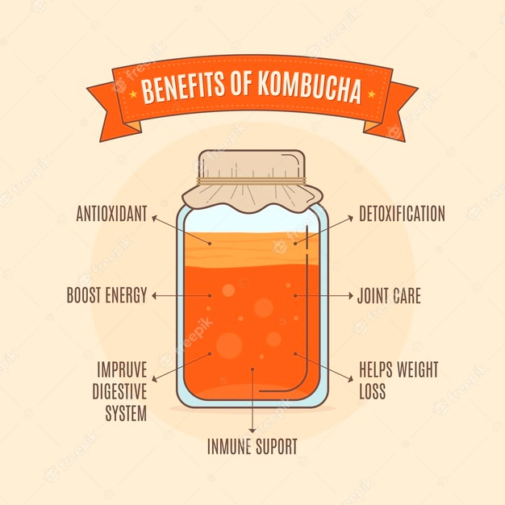
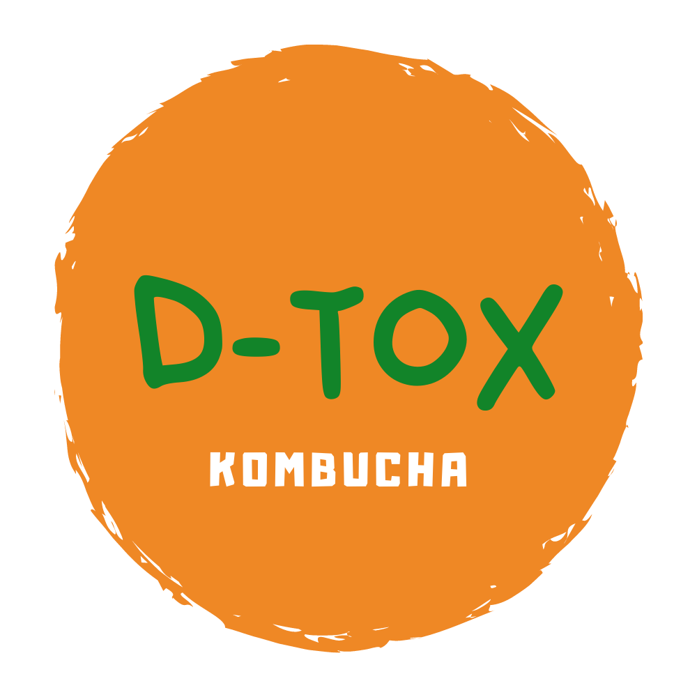
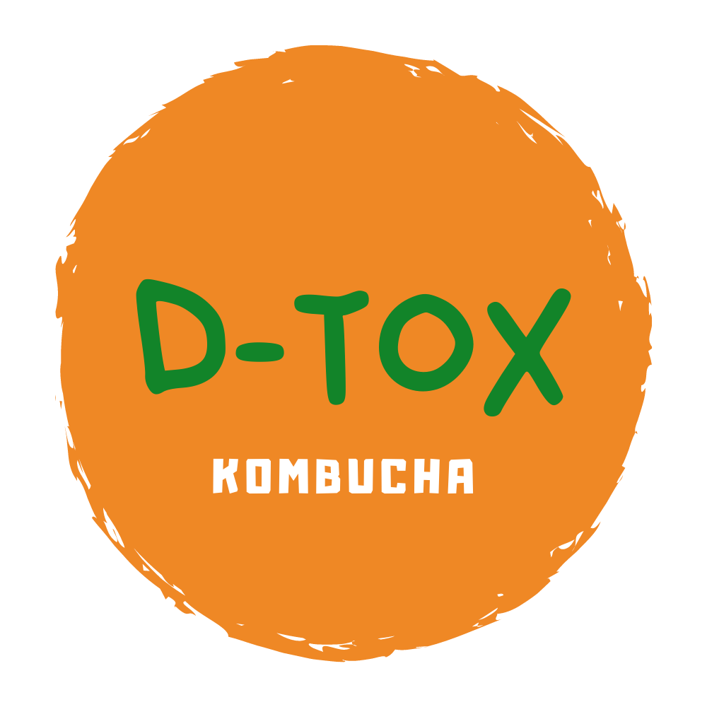

A D-TOX Kombucha tem o desejo de te oferecer uma experiência agradável
na degustação de kombuchas, proporcionando uma mistura natural e leve
entre os chás, sucos naturais e especiarias. Esperamos que cada um que
prove a D-TOX sinta já no primeiro gole o carinho, cuidado e energia
positiva que tentamos depositar em cada uma delas.

Fazer kombucha é muito mais sobre a forma como nos relacionamos com o
outro do que podemos imaginar. Fazer kombucha exige paciência,
entender o tempo do outro e dos processos de cada um. Fazer kombucha
exige cuidado, carinho e dedicação, tanto com a própria kombucha
durante sua evolução, quanto com o outro que vai receber ela como
produto. Quando entendemos e aceitamos esses processos passamos a
perceber a vida de outra forma. Cuide de você, entenda os seus
processos, cresça e evolua com eles... Sempre 🧡
 
